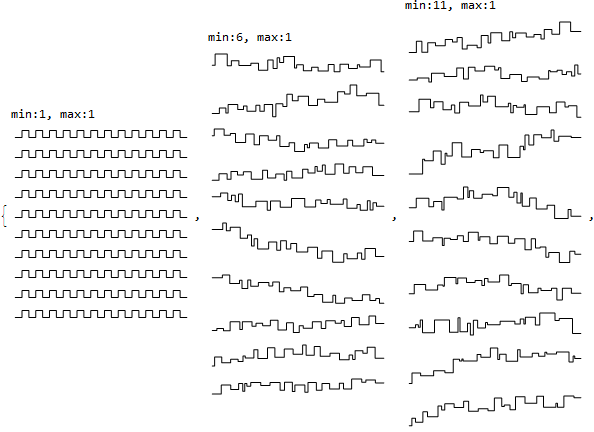
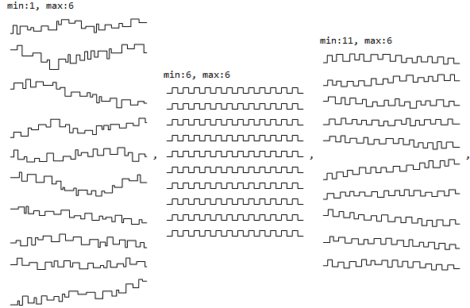
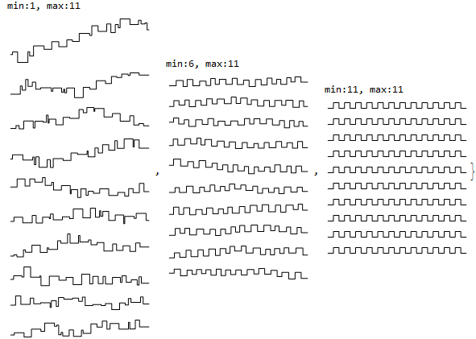

City drawing
Pedro Sobota
June/2020
Horizontal and vertical lines' lengths are random.
Graphics@Line[{{0, 0}, {1, 0}, {1, 1}, {2, 1}, {2, 0}, {3, 0}}]
Clear@draw;
draw = Module[{x, y, coords, vert, up, xrnd, yrnd},
Function[{scale, xmin, xmax, ymin, ymax, imageSize},
x = 0;
y = 0;
vert = False;
up = True;
coords = Table[(
xrnd = RandomReal[{xmin*scale, xmax*scale}];
yrnd = RandomReal[{ymin*scale, ymax*scale}];
vert = ! vert;
If[vert, up = ! up];
If[! vert, x = x + xrnd];
If[vert, y = If[up, y + yrnd, y - yrnd]];
{x, y}
) &[], 50];
Graphics[Line@coords, ImageSize -> imageSize]
]];
draw[3, 1, 20, 1, 20, Large]
Flatten@Table[Table[Column@{
StringForm["min:``, max:``", min, max],
Column@Table[
draw[1, min, max, min, max, Small]
, 8]
}, {min, 1, 11, 5}], {max, 1, 11, 5}]



GraphicsColumn[Table[draw[4, 11, 1, 11, 1, Large], 5], ImageSize -> 600, Frame -> True]